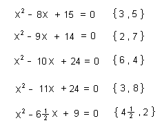

Answers for Chapter 8 Sample Problems
Part
1- Solving Equations
The answers to the quadratic equations are:
To Ch. 8 problems part 2- iteration
To Ch. 8 problems- part 1- solving equations
To order Don's
materials
To choose sample problems from
other chapters
Mathman home